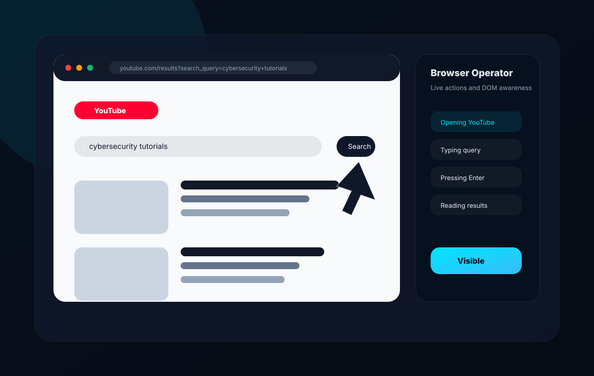

Browser automation
Jarvis includes a visual browser operator powered by Playwright. It opens a real browser, navigates websites, types into fields, clicks visible elements, scrolls pages, captures screenshots, and reports live progress.

Supported commands
- Search Google for a query.
- Open YouTube and search a topic.
- Open a website by name or URL.
- Click visible text, links, or buttons.
- Scroll the current page.
- Summarize readable page content.
DOM understanding
The browser operator extracts visible inputs, buttons, and links from the page. This DOM summary appears in the Browser page so users can see what Jarvis can act on.
Live visibility
Automation runs in a visible Chromium browser with slow motion enabled. The Browser page shows current URL, title, screenshot preview, tab list, action logs, and history.
Controls
| Control | Behavior |
|---|---|
| Pause | Stops between checkpoints until resumed. |
| Resume | Continues the current workflow. |
| Stop | Requests cancellation and marks the run stopped. |
| Close | Closes the Playwright browser context. |
Safety
Sensitive browser actions such as payments, account changes, downloads, login workflows, and destructive actions are routed through the permission engine and can require confirmation.
Created by Jojin John
JX Jarvis is created by Jojin John.